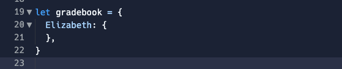
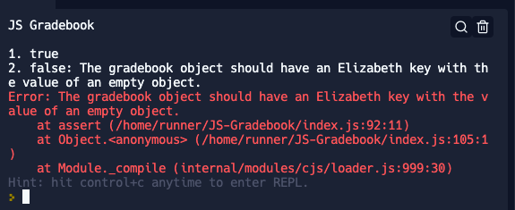
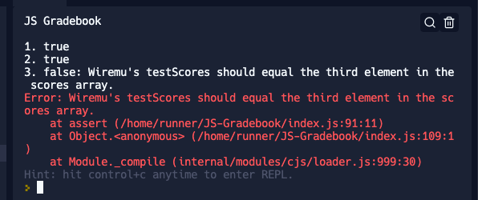

Blockage - but it's so simple (right?)
What was the problem?
I hit a wall when going through the Gradebook problem this week. In short, this challenge asked us to create a Gradebook which would contain a Student's name and their test score. Sounds simple, right?
We were even given the students' names AND their scores as you can see below.

Names of the students to be entered into the Gradebook

The students' scores
Gradebook object
Test 2
Test 3
So the main source of confusion was how they jumped from the test 2 error to the test 3 error when there was no direct instructions to add the other students to the Gradebook.
Problem-solving technniques used:
Checked the "hints" which gave us pseudocode that suggested to add each of the students (Joseph, Susan, wiremu, and Elizabeth) as properties within the Gradebook. The hints also mentioned
Feels during the process:
Confused by the disconnect between the tests 2 and 3 error messages. The error message for test 3 only implied the steps that should be taken to get to that stage.
Lesson learned:
While it wasn't 100% necessary to add the students to the gradebook manually (i.e. you could complete all the tests in this Kata without doing this), it actually helped to understand the challenge in a methodical order. By adding the students as properties and then assigning them an iterator based on the array, it made it easier to understand why tests 2 and 3 were failing.
Such elegance - describe a time you "elegantly solved a problem"
What was the problem?
I think elegance should be thought of as a fluid term that can be molded to fit one's scenario. In saying that, Fizzbuzz had me stumped for hours on end - super_fizzbuzz specifically.
Problem-solving technniques used:
After giving this a go, I actually Googled "Fizzbuzz" challenge and there was an endless amount of articles which talked about this common problem. I even found some websites which gave the shortest coding answer to "solve" Fizzbuzz. These articles were somewhat helpful in understanding looping, but not 100% in relation to completing the Kata.
When I couldn't get unstuck doing super_fizzbuzz, I re-watched Joseph's Intro to JavaScript video about looping to go back to the start and understand the 3 elements of a loop. This was really helpful in refreshing my mind about the iterator and setting the condition that needs to be met before the loop stops looping. I still wasn't able to complete this challenge after understanding this though.
The problem-solving technique that moved me forward the most goind through this challenge was asking for help in my homegroup. There were a few of us stuck on this problem, and we were able to go through this it as a team with Naomi and Jatin. This collaboration was really helpful in breaking down what exactly the error messages were implying and how we could take the information from the "hints" to complete this challenge.
Feels during the process:
All the feels. Confusion, lost, over it!
Lesson learned:
Confidence level using each of the following techniques:
Pseudocode: 6/10
I see the the value in pseudocoding. I'm just not great at it at this stage as I struggle to break big technical problems down into smaller, easy-to-understand problems. We'll get there.
Trying something: 7/10
This one is always the starting point. If I continue getting an error, that's when I move on to another problem-solving technique.
Rubber ducky method: 0/10
I haven't given this one a go as yet, but I definitely think it'd be beneficial to help me explain things in laymans terms so that I actually understand the problem(s) properly.
Reading error messages: 5/10
This one's two-fold I reckon. I can read error messages and have an idea of what's being suggested for how to fix the issue. Applying this is another story.
Console.logging: 6.5/10
I've console.logged more this sprint than the past 3 sprints combined. I'd like to get into the habit of doing this more, but also understanding the reason for what and why I'm console.logging at a point, and then using the result to troubleshoot from there.
Googling: 7.5/10
I feel like this one's two-fold. We'll often get an indication of the problem from the given error message, or even through the hints in the Kata's and go from there. Googling is the easy part. It's filtering the results and then translating the syntax info from the website you've found into the problem that you're trying to solve yourself.
Asking your peers for help: 6/10
My confidence in asking for help waivers. I definitely see the value in it. Sometimes I find it hard to explain the problem I'm having (thank the lawd for screenshots). I think I hold back sometimes from asking questions as I think I should be able to solve the problem through troubleshooting myself.
Asking coaches for help: 7/10
I haven't asked my facilitator for much help in Foundations, but when I have it's been super useful!
Improving your process with reflection: 7/10
I think I need to allow/allocate myself more time for reflection. When I do reflect, it's super helpful but I could be doing this more often to assist with growing my muscle-memory.